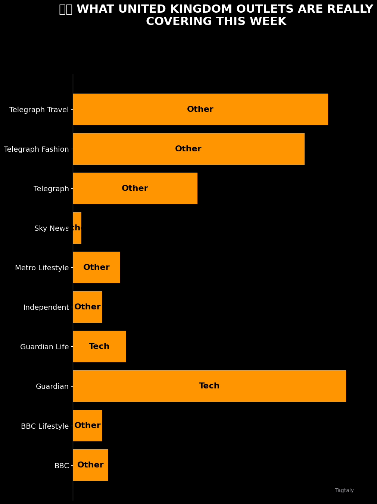
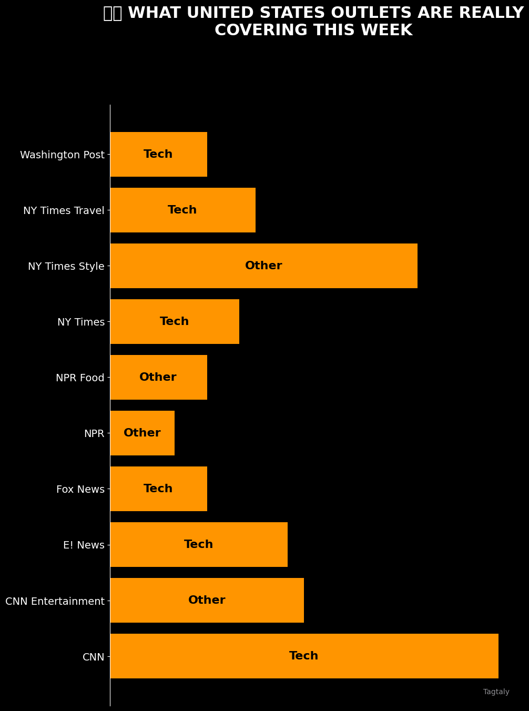
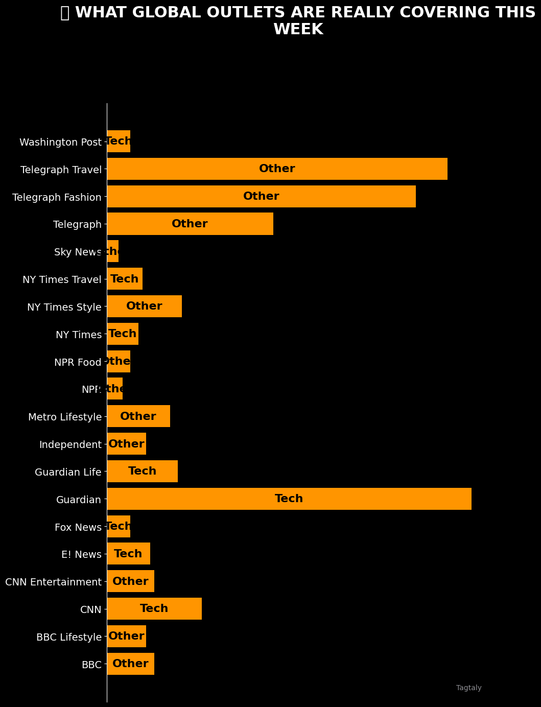

News That Matters.
Data That Shows It.
1,000+ articles analyzed daily from UK 🇬🇧 & US 🇺🇸. Drama delivered in charts.
Today's Viral Charts
🇬🇧 Record-breaking stories this week

🇬🇧 What UK outlets are covering

🇺🇸 What US outlets are covering
🇺🇸 Record-breaking stories this week
🌠Record-breaking global stories

🌠Global media coverage
What We Track
🗳️
Politics
Who's dominating the headlines
📈
Surges
Topics exploding week-over-week
🏥
Health
NHS coverage and trends
💰
Economy
Financial news that moves markets
📰
Media Bias
What each outlet really covers
🚨
Records
Highs, lows, and breaking points
How It Works
1
Collect
1,000+ articles daily from UK & US news sources
→
2
Analyze
Viral scoring, topic classification, sentiment analysis
→
3
Visualize
Generate 6 viral-ready charts (UK, US, Global)
→
4
Deliver
Posted daily at 7 AM UTC, ready to share